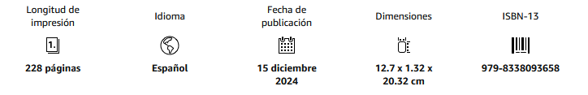

Novela · alegoría · institución total
Las reglas de la Casa
En la Suecia de 1943, la Casa convierte la ceguera voluntaria en signo de prestigio, disciplina y pertenencia, hasta lograr que la renuncia pueda presentarse como una forma de libertad.
La novela sigue el crecimiento de una institución cuyo poder no descansa únicamente en la coerción. La Casa ofrece identidad, jerarquía y reconocimiento; su eficacia consiste en hacer deseable aquello que, visto desde fuera, parece una pérdida.
El conflicto enfrenta esa promesa de sentido con la experiencia individual del cuerpo, la belleza y la mirada. La cuestión central no es solo cómo obedecen sus miembros, sino por qué llegan a querer obedecer.
Datos de edición

Fragmento
«Lars estaba fascinado por el espectáculo. Había una actividad febril, como de colmena. Vio ese aluvión de personas de todo tipo y condición, todas ellas ciegas. Y sus manos. Sus manos flotando por la pared mientras caminaban. Las manos como un río que iba encontrando el camino a lo largo de las paredes. Haciendo ondulaciones, pequeños rizos; avanzando siempre. La visión mareaba y finalmente solo veías esas corrientes de manos, ese universo de manos que avanzaban sin destino y sin tregua, como una estampida de pequeños animales, libres al fin de algún yugo ancestral.»